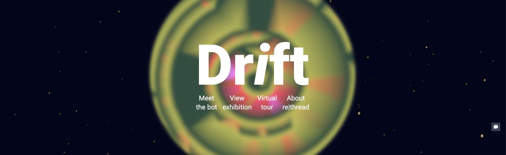

Screenshot Drift website
Acknowledgements
Drift is an online exhibition designed and developed by the rethread.art collective.
Erik Natanael Gustafsson, Thomas Durieux, Jonathan Ramirez Mendoza, and Benoit Baudry are supported by the KTH Royal Institute of Technology, the KMH Royal College of Music, the CASTOR center for software research, the NAVET hub for science and art and the Wallenberg Autonomous Systems, Software and AI Program (WASP).

This work is licensed under a Creative Commons Attribution 4.0 International License.